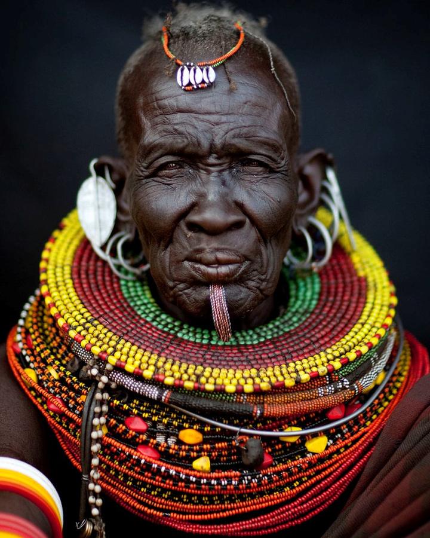

According to Cambridge Dictionary culture is simply a way of life.Though diverse people have different definitions of culture the above definition is very simple basic. From it we can deduce that culture encompasses diverse things in our lives and the culture wheel has been able to bring out all this.
Values
Food and drinks
The arts
Tools and objects
Techniques and skills
Traditions and rituals
Language
Knowledge and stories
Greater community
WHO ARE THE TURKANA PEOPLE?

The Turkana People in Kenya
The Turkana people are a nilotic ethnic group located in north western Kenya, particularly Turkana and Marsabit counties. They are itenerant group who are culturally rich. According to Britannica the Turkana speak an Eastern Nilotic language of the Nilo-Saharan language family. Their language closely resembles that of the Teso. The Turkana people attract tourists because of their festivals and regalias. They are very good at entertaining tourists and the tourists are surely, always completely fascinated by this people's extra ordinary talents.
According to the 2009 census, Turkana was declared as the tenth largest ethnicity in Kenya. (Lafforgue, n.d.)
The Greatness of Turkana Culture
The Turkana people are well known for their cultural richness. The Turkana people are people who stick to their culture regardless of the context.
The food their eat is very healthy. This people main source of livelihood is the herd of cattle they have. From this they drink milk, blood and they eat meat. This where they acquire nutrients from.
EARLY MARRIAGE IN TURKANA CULTURE
To begin with, what is early marriage and why is a topic of concern when it should be left to the couples? This are some of the questions people ask themselves but what they do not know is that such topic is very sensitive and can lead to a person to be jailed when found guilty. According to a UNICEF report, girls in this community are the second source of wealth after the size of the herd of cattles. (UNICEF, 2016). Recent MICS data shows that 32 percent of Turkana women currently aged between 20 and 49 were married before 18. (UNICEF, 2016).
Again, 14 percent of 15-19 years olds are married; and almost 10 percent of girls were married before the age of 15. The same survey also reveals that 102 in every 1000 women in Turkana had given birth by age 19. (UNICEF, 2016).
Causes of early marriage
Poverty/financial insecurity
Discriminatory traditions and beliefs
Illiteracy and lack of sexual education
Insecurity
Religion
The effect of early marriage
Violation of human rights
Risk of diseases like HIV and other sexually transmitted infections
Death
Overpopulation
Poverty
Ignorance caused by illiteracy
The scope of the problem
Tried and true solutions to early marriage
To solve this global problem a holistic approach should be taken. The global community has to be aware of this and they should be on the frontline trying to curb such a heinous act. The causes of this problem should also be alleviated if not done away with, once and for all. For example illiteracy, we should know how to deal with it and luckily we know. Educating girls is the best way to deal with this crisis. I believe if these girls knew it was grossly unfair to be married they would have sought refuge from early marriage. The solutions to this crisis include:
Education and empowering girls.
Providing adequate health,justice and other services
Support young people to become activists for their rights and freedom
Raising awareness/introducing sex education in school
Laws should be enforced to curb this practices
Call for global action
Increase marriage age to 18, with no exceptions
Why early marriage still continuous
Five reasons why early marriage continuous
Younger wives are considered more obedient
Laws protecting girls are not enforced
Families believe that early marriage will protect girls from sexual violence
The older girls get the higher the dowry will be for their parents